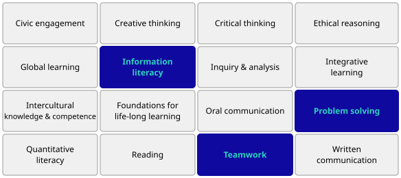
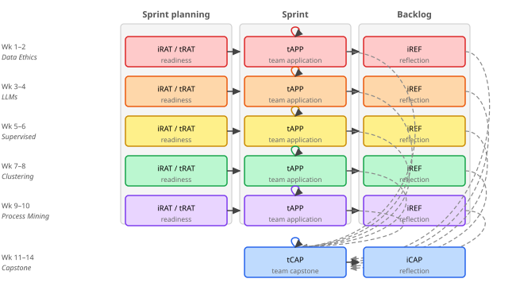

Designing Authentic Industry-Engaged Assessment for Professional Competence
Motivation
Academia
aims to prepare students for professional practice, but offers limited guidance on how to operationalize this in course design and assessment
Industry
expects credible, reproducible results supported by clear reasoning and usable for decision-making
Underlying mismatch
what counts as “good work” differs between academic and professional contexts
Context: Business Intelligence
Overview
- 6 ECTS course
- advanced undergraduate and early graduate students
- 10–15 students, two teams
What is BI?
data-driven decision support
- data analysis
- systems integration
- communication to inform organizational decisions
Goal: strengthen industrial relevance and professional competence
Industry-engaged project
Sustained industrial context
a single dataset and domain used across the entire semester
Industry partner role
- problem framing
- milestone discussions
- final evaluation
Dual context
academic and industry perspectives coexist throughout
Design focus: LOUIS-guided
Focus on a small set of competences within a sustained industry context.
LOUIS — Learning Outcomes in University for Impact on Society (Aurora University Network). Focus on a small set of competences (max 3).

Pedagogical structure

Team-Based Learning: iRAT (individual readiness) · tRAT (team readiness) · tAPP (team application) · iREF (individual reflection)
Flipped classroom · Iterative modules leading into capstone · iRAT/tRAT use is slightly unconventional
Assessment as development
Core mechanism
One rubric, many iterations
same assessment rubric reused across all modules and the capstone
- analytical soundness
- transparency
- reproducibility
- stakeholder relevance
Developmental shift
feedback is carried forward — not reset between tasks
Standards fixed; performance expectations scaled during the learning phase.
Evolving feedback
Instructor
- method
- implementation
Industry partner
- domain relevance
- decision context
Student
- knowledge transfer through PRs
- defending decisions
- critiquing peer work
Progression over time
- align within teams
- cross-team review
- industry validation
Audience shift
from internal review to external scrutiny
Credibility and trust
Industry threshold
credibility is fragile: early issues can undermine trust in the entire result
What is evaluated
- reproducibility
- transparency
- clear assumptions
Shift in communication
build trust first — then invite inspection
Students are told to present to sell — then invite the partner to read the codebase if curious, and the final report if they want the full picture. (The report is what I grade — the partner never needs to.)
Indicative evidence
Students & graduates
- high engagement without attendance requirements
- transfer of reproducible workflows
- stronger documentation practices
Academic perspective
more ambitious, student-driven projects
Industry perspective
improved coherence and credibility; results could be implemented in practice
What this design makes visible
Transferable principles for CDIO-aligned, industry-engaged courses.
Sustained context
one domain, all semester — depth over breadth
Assessment as iteration
same rubric, feedback carried forward — not reset
Visible contributions
accountability without fragmenting the team
Widening audience
from internal review to industry scrutiny
Accumulated feedback
unresolved issues stay visible across submissions
Tooling as support
design comes first — tools enable it
Questions?

Team and individual accountability
Team-level
- analytical quality
- coherence
- relevance
Individual-level
- visible artifacts
- documented contributions
- structured reflection
Design goal: accountability without fragmenting teamwork — designed into the course architecture, not added after the fact.
22nd International CDIO Conference · Helga Ingimundardóttir · helgaingim@hi.is